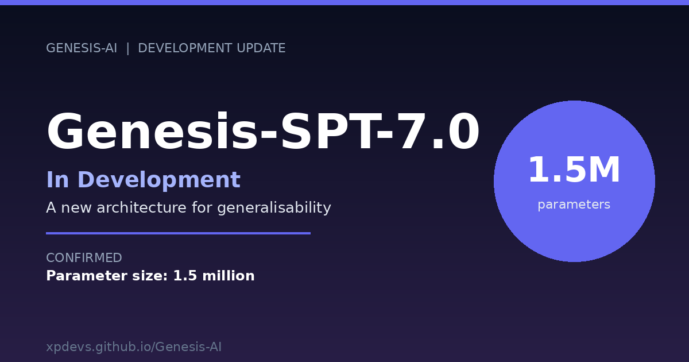
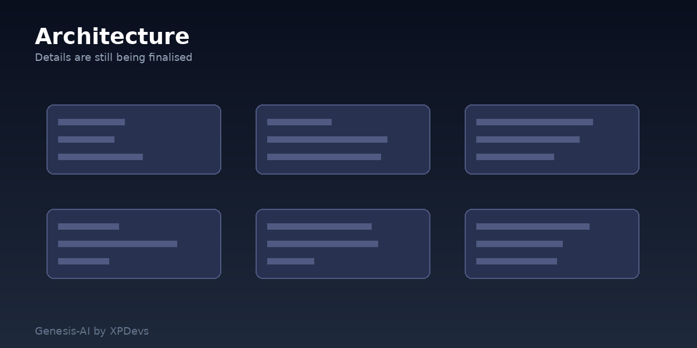

We are developing Genesis-SPT-7.0. It is the next model in the Genesis family. Development is ongoing and nothing has been confirmed yet. The one confirmed detail is the parameter size. Genesis-SPT-7.0 is being built at one and a half million parameters. Everything else is still subject to change.
We can share the direction. The goal is a new architecture for generalisability. We want a model that handles a wider range of tasks without growing in size. The work is early. We are not ready to share architecture details, training data, or benchmarks. Those will come later.

Details of the architecture are still being finalised.
The parameter size is the one fixed point. One and a half million keeps the model small. Small models load fast and run on modest hardware. That matters because Genesis runs in a browser. We are exploring how far a model of that size can go.
Genesis-SPT-7.0 is not open source yet. The model is still in development. Once it is finished, it will be published on GitHub. After that, it will be available on the Genesis-AI website. You will be able to run it there without setting anything up yourself. No local install. No command line. Just open the page and use it.
We will share more details as development continues. Thank you for following along.